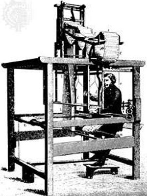

Jacquard Loom, 1801
Jacquard's loom mechanism is controlled by recorded patterns of holes in a string
of cards, and allows, what is now known as, the Jacquard weaving of intricate patterns.
n 1801, Joseph Marie Jacquard, a silk-weaver, invented an improved textile loom.
The Jacquard loom was the first machine to use punched card. These punched cards controlled
the weaving, enabling an ordinary workman to produce the most beautiful patterns in a style
previously accomplished only with patience, skill, and hard work. (7)